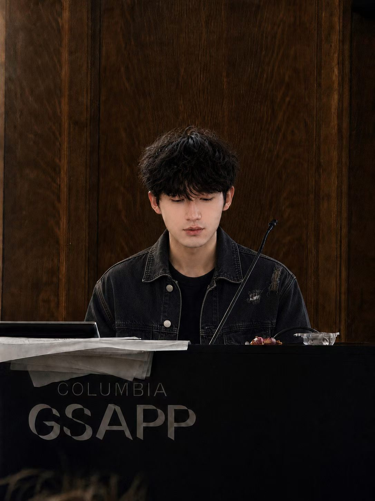

01 / PRODUCT
先定义边界，再增加能力
锁定“判断价值成本高、深读路径复杂、AI 结论难验证”三类问题，定义 AI 导读 / AI 精读 / AI 助手。LLM 负责意图、规划、推理与表达；解析、检索、原文锚点和核验交给确定性系统。
我关注的不是让 AI “多说一点”，而是如何让它在真实产品里更可靠地完成任务：知道何时检索、引用什么证据、什么时候应该停止，以及如何被持续评测和迭代。

锁定“判断价值成本高、深读路径复杂、AI 结论难验证”三类问题，定义 AI 导读 / AI 精读 / AI 助手。LLM 负责意图、规划、推理与表达；解析、检索、原文锚点和核验交给确定性系统。
以单文档结构感知 RAG 替代通用 RAG 混检，通过“任务 → 章节”路径模板约束自由规划；在选中文本、当前论文、对话历史与联网搜索间进行最小必要信息源路由。
核心结论绑定页码、章节与原文依据；加入不共享生成上下文的独立验证层，只报告验证结果、不改写答案，并设置“证据不足不输出”。
构建导读 / 精读 / 助手固定 24 条用例，每个版本重复 3 次；用 V1 → V2 → V3 单变量实验评估准确、证据、定位、路由、引用、幻觉与任务完成率。
建立 P0 一票否决 + 10 层 Bad Case 归因，形成“根因 → 修复 → 复跑 → 回归”的持续迭代流程。
Python · SQL · LLM 应用 · 结构感知 RAG · Agent 工作流 · 工具路由 · Prompt 工程 · Git
用户场景洞察 · AI 功能定义与边界拆分 · AI 交互设计 · AI 评测与上线门禁 · Bad Case 归因 · 降级与兜底
用户研究 · 指标体系 · 数据实验设计 · 用户行为分析 · 转化漏斗 · 数据复盘 · 产品方案设计
Figma · Web Prototype · Excel · PowerPoint · Photoshop · Illustrator